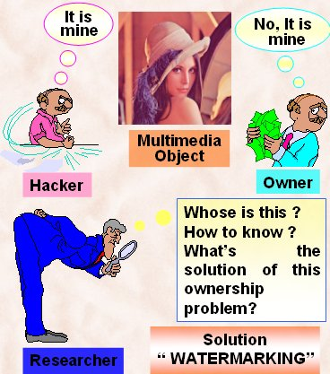

Due to availability of the images through Internet and many digital media, there is a serious threat to them from the digital thieves. As a consequence, the ownership of the image might be misinterpreted. In this context, research work is needed to resolve rightful ownership. The owner should be able to hide some information in the image and when needed he/she should be able to extract that information to prove his ownership. The information so stored is called 'Watermark'. Watermarking is the process of embedding data called a watermark (also known as Digital Signature, Tag or Label) into a multimedia object such that watermark can be detected or extracted later to make an assertion about the object. The object may be an audio, image or video. The watermarking may be of two types, namely Visible Watermarking and Invisible Watermarking. In visible watermarking, the watermark is visible in the background of the image without degrading the quality of the image. It makes its presence felt only when someone tries to see the image for a longer time with great care. In invisible watermarking, the watermark is not visible at all. Only the owner can decode the watermark using some decoding techniques of its own. In both cases, great care should be taken to make the watermark robust so that no one can remove the image and claim its ownership. The techniques that are applied to images can be extended to other multimedia data like audio and video. During my masters project work, I have developed four Watermarking Algorithms. Two of them are Visible Watermarking Algorithms and the rest two are Invisible Watermarking Algorithms. The four algorithms appear under following headings in my thesis.
- An Adaptive Visible Watermarking Technique for Image Data.
- An Adaptive Visible Watermarking for Image Data in DCT Domain.
- An Invisible Image Watermarking Technique in Spatial Domain.
- A Spread Spectrum Watermarking Technique for Digital Images.

(Theme Page from Masters Thesis, 1999)